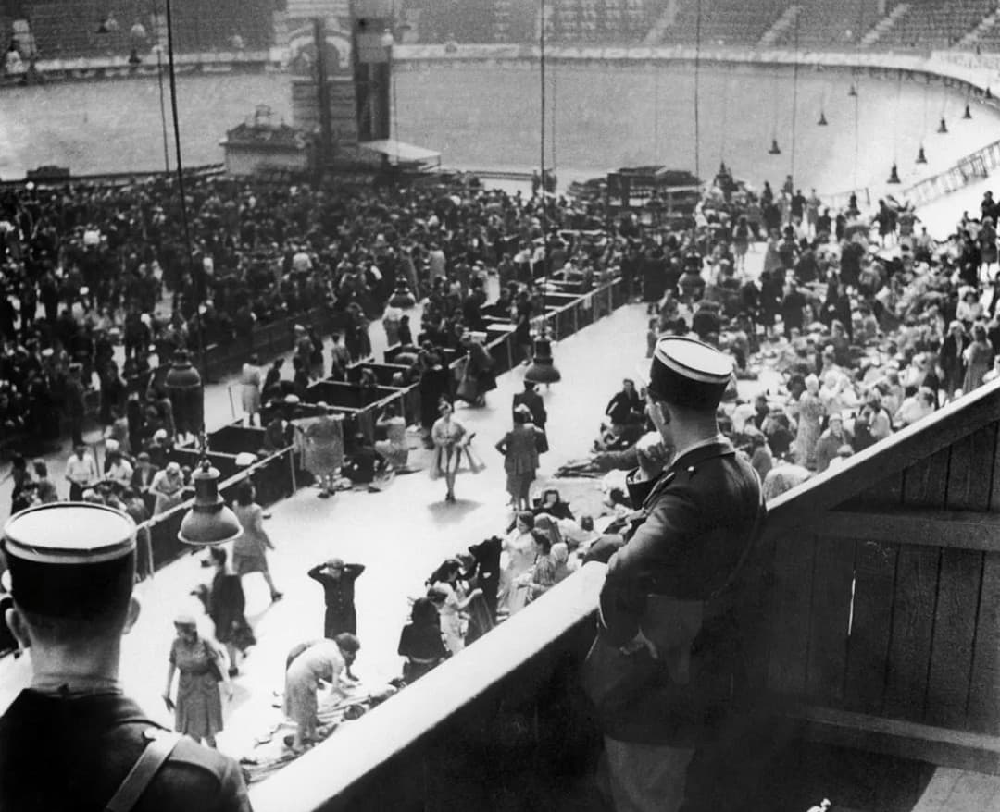
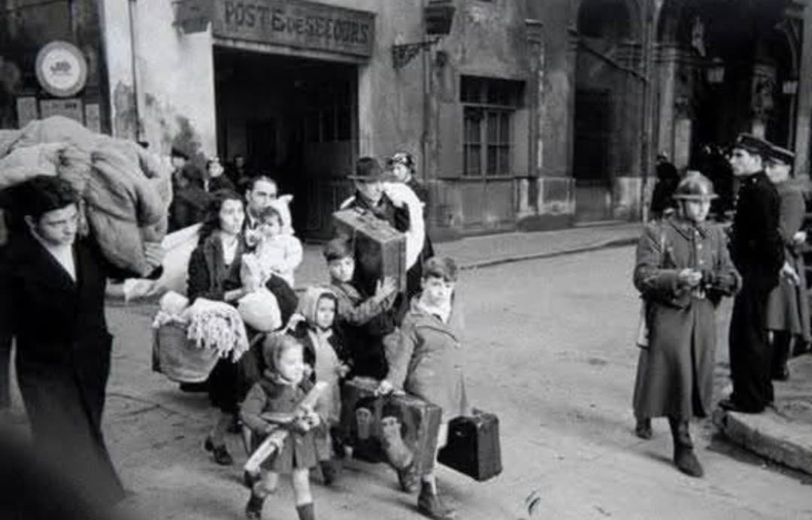
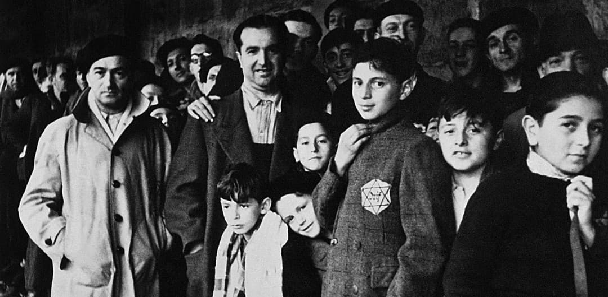
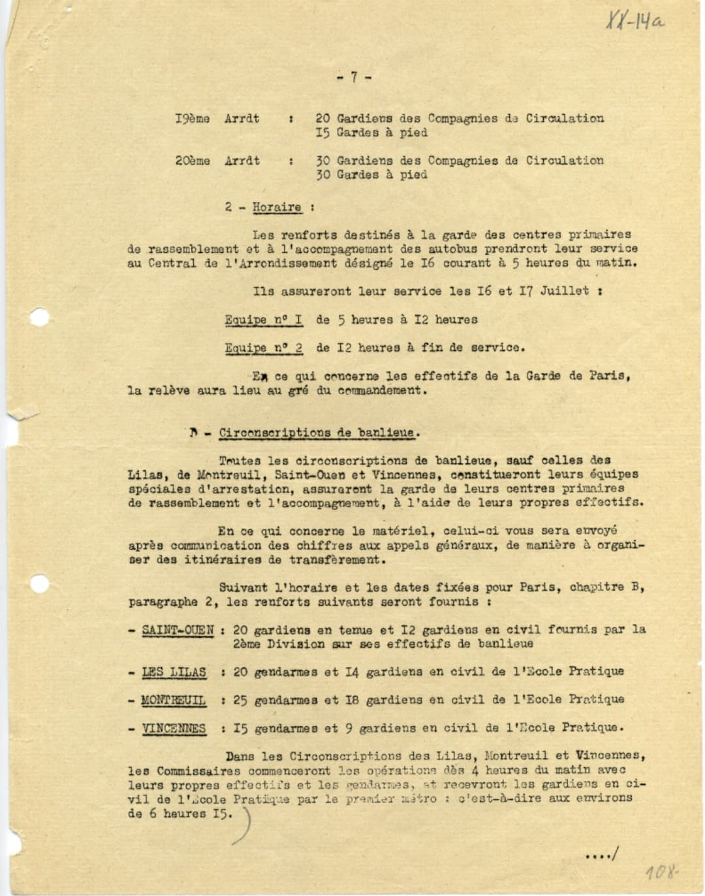
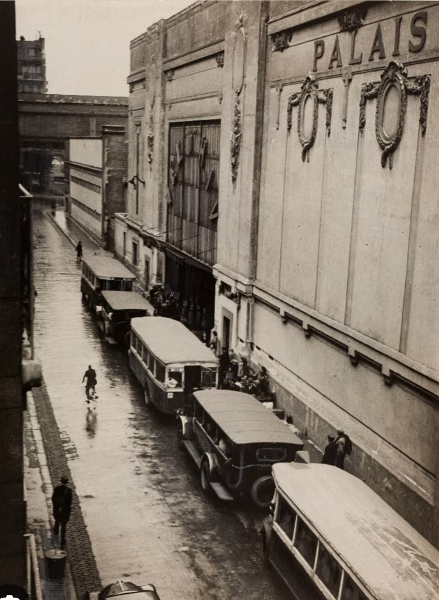
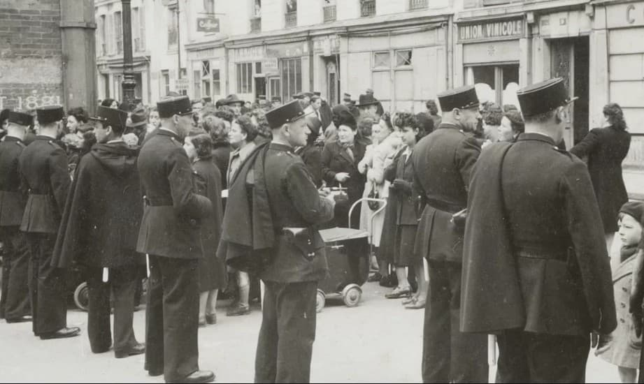
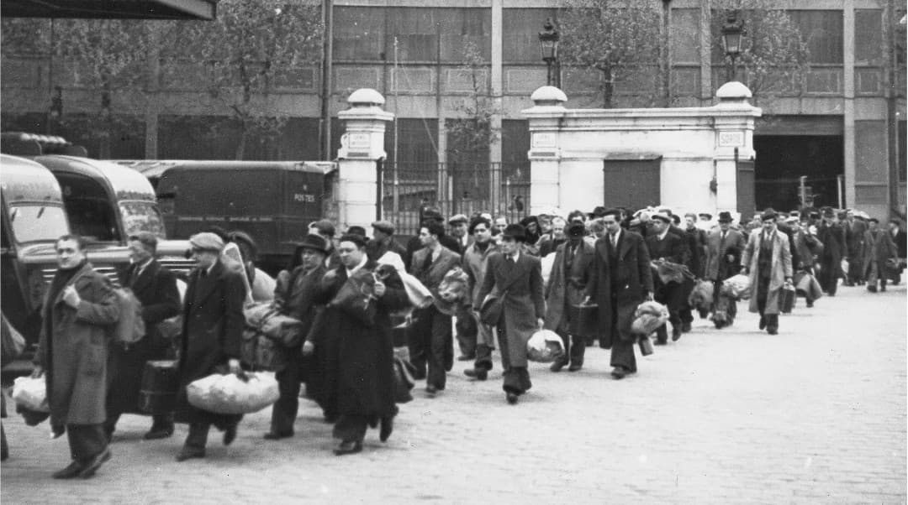

La rafle du Vel d’Hiv, les 16 et 17 juillet 1942, est la plus grande arrestation de Juifs organisée en France. En deux jours, 13 152 personnes — dont près de 4 000 enfants — sont arrêtées par la police française sur ordre des autorités allemandes. Les familles sont regroupées dans le Vélodrome d’Hiver, dans des conditions dramatiques.
La rafle du Vel d’Hiv s’inscrit dans la politique antisémite mise en place en France occupée :
Elle marque une étape majeure dans la participation de l’administration française à la persécution des Juifs.

À l’aube du 16 juillet 1942, les policiers se présentent aux domiciles avec des listes nominatives. Les familles sont arrêtées, souvent sans comprendre ce qui se passe, et conduites vers des centres de rassemblement.

Les familles arrêtées sont regroupées dans des écoles, des commissariats ou des bâtiments administratifs. Les conditions sont déjà difficiles : attente prolongée, manque d’eau, absence de soins.
Le Vel d’Hiv devient un immense centre d’internement improvisé : chaleur étouffante, absence d’eau potable, manque de nourriture, pas de soins. Les familles y restent plusieurs jours dans des conditions inhumaines.

Les témoignages évoquent une situation catastrophique : enfants épuisés, malades sans soins, odeurs insupportables, absence totale d’hygiène. Le Vel d’Hiv devient le symbole de la détresse des familles juives arrêtées.

La rafle est entièrement menée par la police française, qui encadre les arrestations, les transferts et la surveillance au Vel d’Hiv. Les documents administratifs montrent une organisation minutieuse.

Les familles sont ensuite transférées en autobus réquisitionnés vers le camp de Drancy. Les véhicules sont escortés par des policiers pour éviter toute fuite.

De nombreux gardiens, gendarmes et policiers sont mobilisés pour encadrer les arrestations, les transferts et la surveillance des familles.

Après le Vel d’Hiv, les familles sont envoyées au camp de Drancy, puis déportées vers Auschwitz. La rafle du Vel d’Hiv devient l’un des moments les plus tragiques de la Shoah en France.